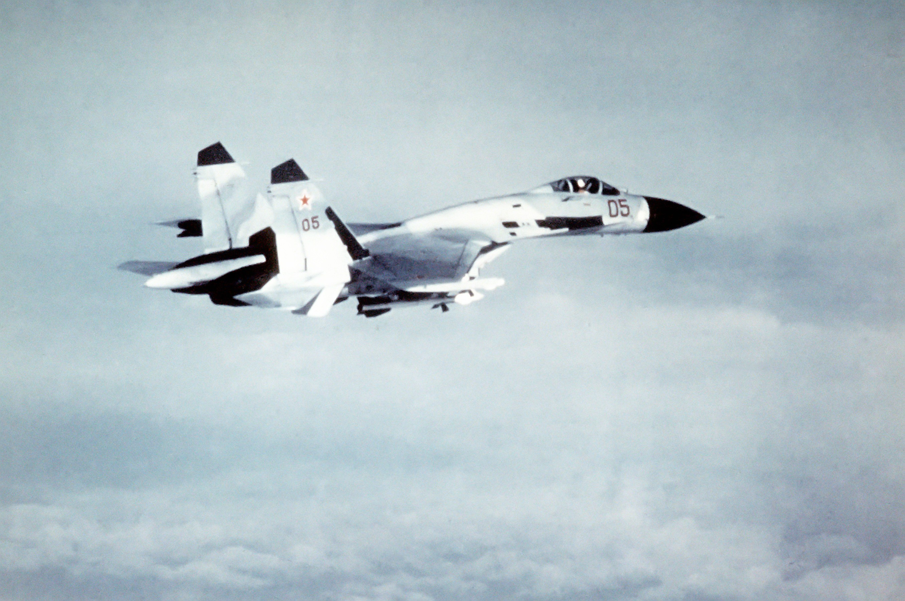
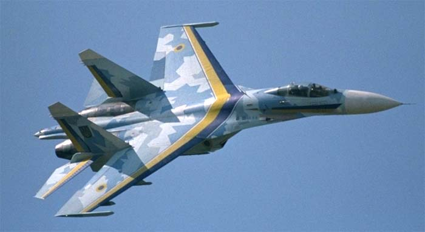
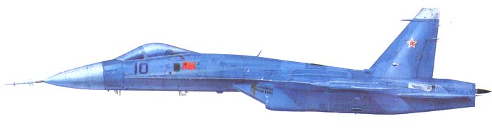
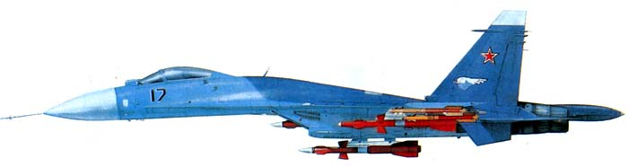
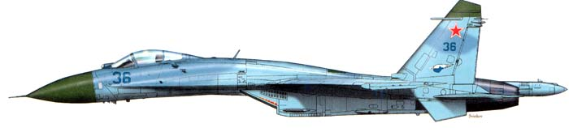
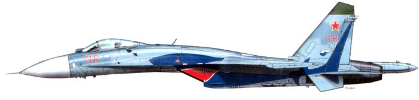
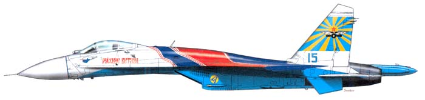
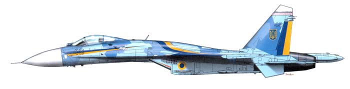
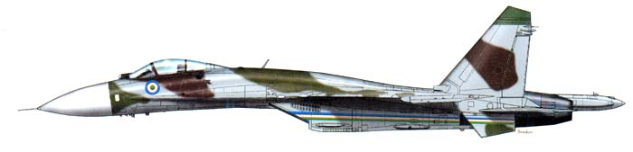

_Sukhoi Su-27

| The Sukhoi Su-27 (Russian: Сухой Су-27; NATO reporting name: Flanker) is a twin-engine supermaneuverable fighter aircraft designed by Sukhoi. It was intended as a direct competitor for the large United States fourth-generation fighters such as the Grumman F-14 Tomcat and F-15 Eagle, with 3,530-kilometre (1,910 nmi) range, heavy aircraft ordnance, sophisticated avionics and high maneuverability. The Su-27 was designed for air superiority missions, and subsequent variants are able to perform almost all aerial warfare operations. It was designed with the Mikoyan MiG-29 as its complement. |
| The Su-27 entered service with the Soviet Air Forces in 1985. The primary role was long range air defence against American SAC B-1B and B-52G/H bombers, protecting the Soviet coast from aircraft carriers and flying long range fighter escort for Soviet heavy bombers such as the Tu-95 "Bear", Tu-22M "Backfire" and Tu-160 "Blackjack". |
| There are several related developments of the Su-27 design. The Su-30 is a two-seat, dual-role fighter for all-weather, air-to-air and air-to-surface deep interdiction missions. The Su-33 'Flanker-D' is a naval fleet defense interceptor for use on aircraft carriers. Further versions include the side-by-side two-seat Su-34 'Fullback' strike/fighter-bomber variant, and the Su-35 'Flanker-E' improved air superiority and multi-role fighter. The Shenyang J-11 is a Chinese licence-built version of the Su-27. |
_Development
| In 1969, the Soviet Union learned of the U.S. Air Force's "F-X" program, which resulted in the F-15 Eagle. The Soviet leadership soon realized that the new American fighter would represent a serious technological advantage over existing Soviet fighters. What was needed was a better-balanced fighter with both good agility and sophisticated systems. In response, the Soviet General Staff issued a requirement for a Perspektivnyy Frontovoy Istrebitel (PFI, literally "Prospective Frontline Fighter", roughly "Advanced Frontline Fighter"). Specifications were extremely ambitious, calling for long range, good short-field performance (including the ability to use austere runways), excellent agility, Mach 2+ speed, and heavy armament. The aerodynamic design for the new aircraft was largely carried out by TsAGI in collaboration with the Sukhoi design bureau. |
| When the specification proved too challenging and costly for a
 single aircraft in the number needed, the PFI specification was split into two: the LPFI (Lyogkyi PFI, Lightweight PFI)
and the TPFI (Tyazholyi PFI, Heavy PFI). The LPFI program resulted in the Mikoyan MiG-29, a relatively short-range tactical fighter, while the TPFI program was assigned to Sukhoi OKB, which eventually produced the Su-27 and its
various derivatives. The Sukhoi design, which was altered progressively to reflect Soviet awareness of the F-15's specifications, emerged as the T-10 (Sukhoi's 10th design), which first flew on 20 May 1977. The aircraft had a large
wing, clipped, with two separate podded engines and a twin tail. The ‘tunnel’ between the two engines, as on the F-14 Tomcat, acts both as an additional lifting surface and hides armament from radar.
....Soviet Su-27 in-flight..... |
_Air Force
| The T-10 was spotted by Western observers and assigned the NATO reporting name 'Flanker-A'. The development of the T-10 was marked by considerable problems, leading to a fatal crash of the second prototype, the T-10-2 on 7 July 1978,[3] due to shortcomings in the FBW control system.[4] Extensive redesigns followed (T-10-3 through T-10-15) and a revised version of the T-10-7, now designated the T-10S, made its first flight on 20 April 1981. It also crashed due to control problems and was replaced by T-10-12 which became T-10S-2. This one also crashed on 23 December 1981 during a high-speed test, killing the pilot.[5][6] Eventually the T-10-15 demonstrator, T-10S-3, evolved into the definitive Su-27 configuration. |
| The T-10S-3 was modified and officially designated the P-42, setting a number of world records for time-to-height, beating those set in 1975 by a similarly modified F-15 called "The Streak Eagle".[8] The P-42 "Streak Flanker" was stripped of all armament, radar and operational equipment. The fin tips, tail-boom and the wingtip launch rails were also removed. The composite radome was replaced by a lighter metal version. The aircraft was stripped of paint, polished and all drag-producing gaps and joints were sealed. The engines were modified to deliver an increase in thrust of 1,000 kg (2,200 lb), resulting in a thrust-to-weight ratio of almost 2:1 (for comparison with standard example see Specifications). |
| The production Su-27 (sometimes Su-27S, NATO designation 'Flanker-B') began to enter VVS operational service in 1985, although manufacturing
difficulties kept it from appearing in strength until 1990.[11] The Su-27 served with both the V-PVO and Frontal Aviation. Operational conversion of units to the type occurred using the Su-27UB (Russian for "Uchebno Boevoy"
- "Combat Trainer", NATO designation 'Flanker-C') twin-seat trainer, with the pilots seated in tandem. When the naval Flanker trainer was being conceived the Soviet Air Force was evaluating a replacement
 for the Su-24 "Fencer" strike aircraft, and it became evident to Soviet planners at the time that a replacement for the
Su-24 would need to be capable of surviving engagements with the new American F-15 and F-16. The Sukhoi bureau concentrated on adaptations of the standard Su-27UB tandem seat trainer. However the Soviet Air Force favoured the
crew station (side-by-side seating) approach used in the Su-24 as it worked better for the high workload and potentially long endurance strike roles. Therefore, the conceptual naval side-by-side seated trainer was used as the
basis for development of the Su-27IB (Russian for "Istrebityel Bombardirovshchik" - "Fighter Bomber") as an Su-24 replacement in 1983. The first production airframe was flown in early 1994 and renamed the Su-34 (NATO reporting
name 'Fullback')
Ukrainian Air Force Su-27 |
_Design
 The Su-27's basic design is aerodynamically similar to the MiG-29, but it is substantially larger. The wing blends into the fuselage at the
leading edge extensions and is essentially a cross between a swept wing and a cropped delta (the delta wing with tips cropped for missile rails or ECM pods). The fighter is also an example of a tailed delta wing configuration,
retaining conventional horizontal tailplanes. The Su-27's basic design is aerodynamically similar to the MiG-29, but it is substantially larger. The wing blends into the fuselage at the
leading edge extensions and is essentially a cross between a swept wing and a cropped delta (the delta wing with tips cropped for missile rails or ECM pods). The fighter is also an example of a tailed delta wing configuration,
retaining conventional horizontal tailplanes.
|
| The Su-27 had the Soviet Union's first operational fly-by-wire control system, based on the Sukhoi OKB's experience with the T-4 bomber
project. Combined with relatively low wing loading and powerful basic flight controls, it makes for an exceptionally agile aircraft, controllable even at very low speeds and high angle of attack. In airshows the aircraft has
demonstrated its maneuverability with a Cobra (Pugachev’s Cobra) or dynamic deceleration – briefly sustained level flight at a 120° angle of attack.
|
The naval version of the 'Flanker', the Su-27K (or Su-33), incorporates canards for additional lift, reducing takeoff distances. These
canards have also been incorporated in some Su-30s, the Su-35, and the Su-37. The Su-27 is equipped with a Phazotron N001 Myech coherent Pulse-Doppler radar with track while scan and look-down/shoot-down capability. The fighter
also has an OLS-27 infrared search and track (IRST) system in the nose just forward of the cockpit with an 80–100 km range.
 The Su-27 is armed with a single 30 mm Gryazev-Shipunov GSh-30-1 cannon in the starboard wingroot, and has up to 10
hardpoints for missiles and other weapons. Its standard missile armament for air-to-air combat is a mixture of R-73 (AA-11 Archer) and R-27 (AA-10 'Alamo') missiles, the latter including extended range and infrared homing models.
Development of a version for the Soviet Navy called the Su-27K (Russian for "Korabyelny" - "Shipborne", NATO designation 'Flanker-D') commenced not long after the development of the main land based type. Some of the T10 demonstrators
were modified to test features of navalized variants for carrier operations. These modified demonstrators led to specific prototypes for the Soviet Navy, designated "T10K" (Korabyelny). The Su-27 is armed with a single 30 mm Gryazev-Shipunov GSh-30-1 cannon in the starboard wingroot, and has up to 10
hardpoints for missiles and other weapons. Its standard missile armament for air-to-air combat is a mixture of R-73 (AA-11 Archer) and R-27 (AA-10 'Alamo') missiles, the latter including extended range and infrared homing models.
Development of a version for the Soviet Navy called the Su-27K (Russian for "Korabyelny" - "Shipborne", NATO designation 'Flanker-D') commenced not long after the development of the main land based type. Some of the T10 demonstrators
were modified to test features of navalized variants for carrier operations. These modified demonstrators led to specific prototypes for the Soviet Navy, designated "T10K" (Korabyelny).
Su-27 Denmark Airshow 2018 |
_Specifications
| General characteristics | Performance | Armament | Avionics | SU-27 at show : |
|---|---|---|---|---|
| Crew: 1 | Maximum speed: 2,500 km/h | Guns: 1 × 30 mm Gryazev-Shipunov GSh-30-1 autocannon with 150 rounds | N001E radar | |
| Length: 21.9 m (72 ft) | Range: 3,530 km | Hardpoints: 10 external pylons with a capacity of up to 4,430 kg | Phazotron Zhuk-MSE radar | |
| Wingspan : 14.7 m | Service ceiling: 19,000 m | Rockets: S-8KOM/BM/OM; S-13T/OF; S-25OFM-PU | Phazotron Zhuk-MSFE radar | |
| Height: 5.92 m | Rate of climb: 300 m/s | Missiles: 6 × R-27R/ER/T/ET/P/EP air-to-air missiles | OEPS-27 electro-optical targeting system | |
| Wing area: 62 m² | Wing loading: 377.9 kg/m² | Bombs: RBK-250 cluster bomb | Zhuk-F/Zhuk-PH | |
| Empty weight: 16,380 kg | Thrust/weight: 1.07 with 56% internal fuel | Rockets: S-25OFM-PU | SPO-15 Radar Warning Receiver | |
| Max. takeoff weight: 30,450 kg | Maximum g-load: +9 g | Bombs: RBK-500 cluster bomb | Zhuk-MA/MAE |
| Related development |
|---|
|
| Coloring options | |
|---|---|
|  | Т-101 |
|  | Т-1017 |
|  | Серийный Су-27 |
|  | Су-27 ЦБПиПЛС ВВС |
|  | Су-27 пилотажной группы "Русские витязи" |
|  | Су-27 ВВС Украины |
|  | Су-27 ВВС Эфиопии |